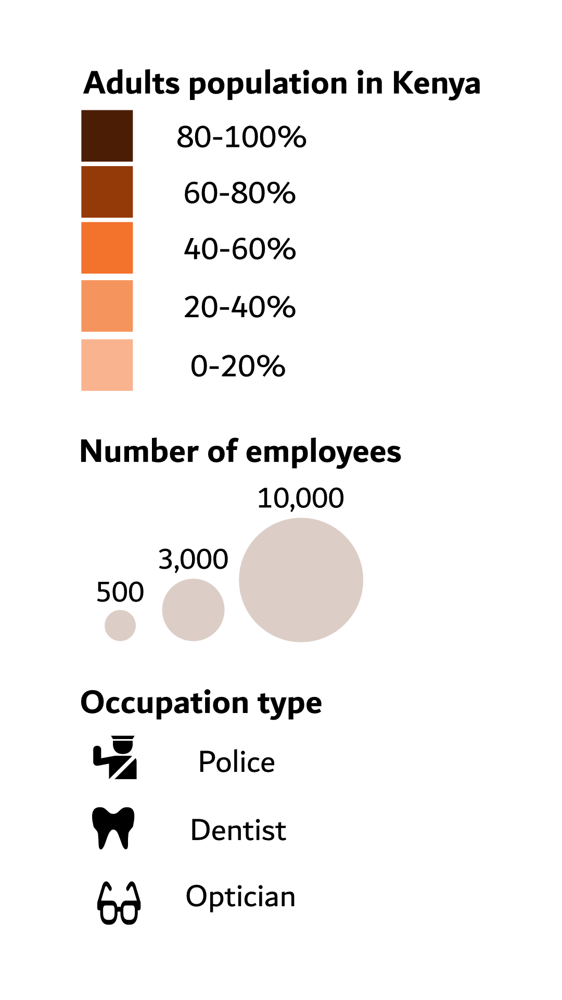
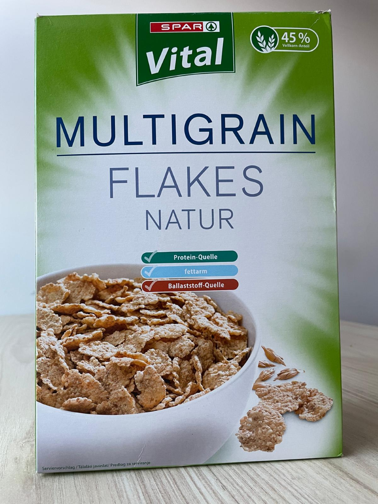
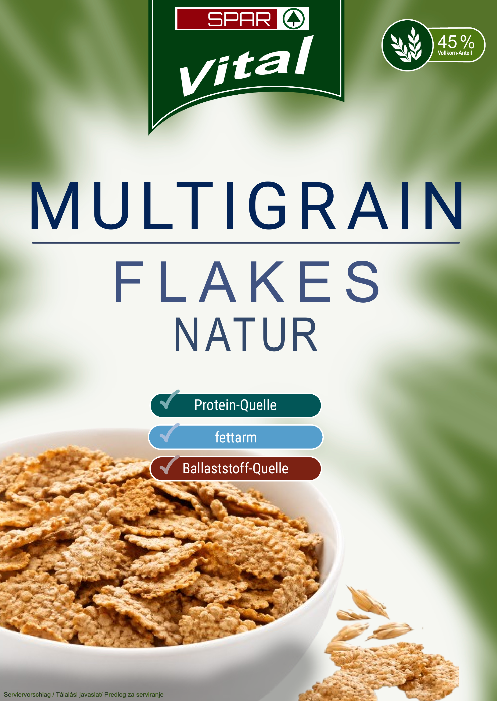
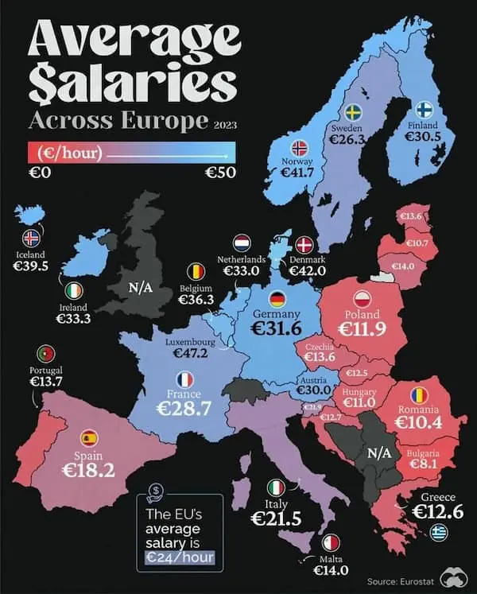
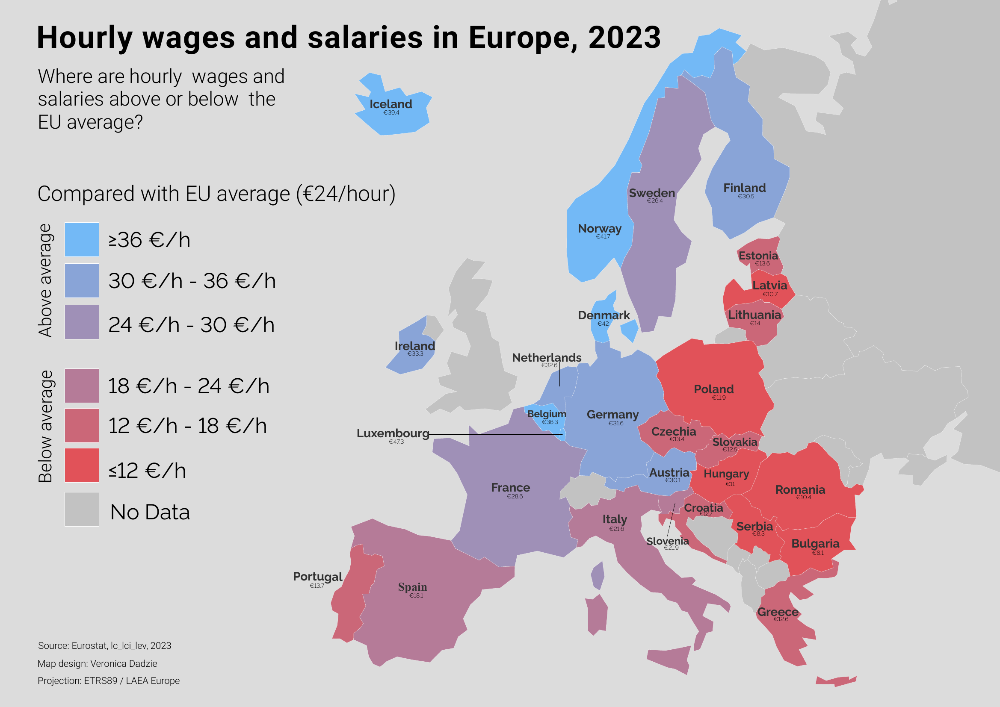
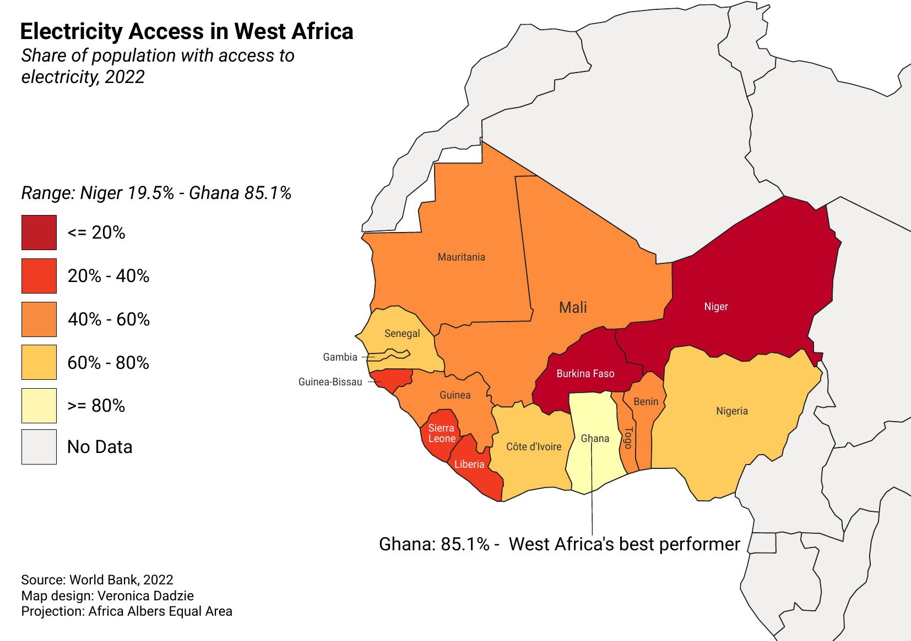
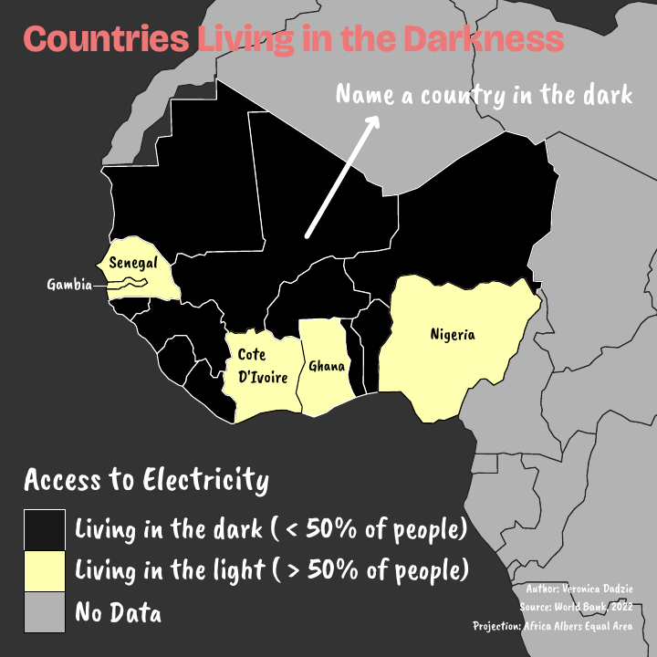

Selected work
Projects
Web Mapping and Multimedia Cartography
5-page interactive web mapping project
Apr 2026 – Jun 2026
A multi-page site covering five techniques: a static feature-extraction/segmentation map, an
Inkscape-built SVG neighbourhood map, an interactive Leaflet.js campus map with custom markers and
popups, a fully responsive CSS-only site, and a custom MapLibre GL JS vector-tile basemap of Donaupark,
Vienna with a live GeoJSON tree-cadastre layer.
The Lake Volta of Ghana
GeoNode StoryMap · Cartographic Interface, International Master's in Cartography
Jun 2026

An interactive GeoStory exploring how the 1965 Akosombo Dam created Lake Volta - displacing 80,000
Ghanaians - and the unresolved human and environmental cost communities around the lake still carry
today. Combines three immersive maps, a community carousel, and narrative text built in GeoNode.
Discover Ghana: A Tourist Map of Heritage, Nature, and Culture
Course Project · Project Map Creation, International Master's in Cartography
Jun 2026
A printed thematic tourist map of Ghana designed to showcase eight major heritage, wildlife, and
water-feature destinations across the country's regions - including Cape Coast Castle, Lake Bosomtwe,
and the Boabeng-Fiema Monkey Sanctuary - paired with national visitor statistics (1.29 million
international and 15.4 million domestic visitors, 2023-2024). Compiles administrative boundaries, road
networks, protected areas, and hydrology from multiple open datasets (GADM, OpenStreetMap/Geofabrik,
Protected Planet, Natural Earth, Esri) into a single reference map with a categorized legend
distinguishing heritage & culture, wildlife & nature, and water-feature sites.
Map Legend and Symbology Design - Kenya Demographics
Course Project · Geomedia Techniques, International Master's in Cartography
Apr 2026

A vector-based legend design exercise combining three core thematic mapping techniques into a single
layout: a five-class choropleth colour scale showing adult population share in Kenya (0-100%),
proportional circles scaled to employee counts (500 to 10,000), and custom-modified pictographic icons
representing occupation types (police, dentist, optician). Built entirely in Affinity Designer, with a
focus on clean legend layout, consistent typography, and hand-edited iconography.
Packaging Design Reproduction - SPAR Vital Multigrain Flakes
Course Project · Geomedia Techniques, International Master's in Cartography
May 2026

Original Product→

Vector Reproduction
Recreated the front-panel packaging design of SPAR Vital Multigrain Flakes Natur from scratch in
Affinity Designer, matching the original's colours, typefaces, layout, and spacing.
Thematic Map Redesign: Hourly Wages and Salaries in Europe
Course Project · Geomedia Techniques, International Master's in Cartography
May 2026

Original Map→

Redesign
Critiqued and redesigned a publicly shared thematic map of European salaries, identifying three core
problems: an unclear data indicator and legend, a cluttered visual hierarchy, and an unjustified colour
scale. Sourced the exact underlying Eurostat dataset (hourly wages and salaries, 2023) for an accurate,
intuitive title, labelled "No data" countries in grey, removed competing elements like flags and dark
backgrounds to bring focus to the thematic layer, and kept the blue-red diverging scale but clearly
centred and labelled it on the EU average with each country's value shown.
Two Thematic Maps, One Dataset: Electricity Access in West Africa
Course Project · Geomedia Techniques, International Master's in Cartography
Jun 2026

Print Magazine+

Social Media
Designed two thematic maps from the same World Bank electricity-access dataset, each adapted for a
different audience and format. The print version, built for a serious paid magazine (A5, horizontal),
uses a six-class choropleth, formal typography, and precise figures to communicate calmly at a glance.
The social media version, built to go viral on a square 1080×1080 canvas, simplifies the same data into a
stark binary classification with a bold, provocative title and dark, high-contrast styling designed to
prompt engagement.